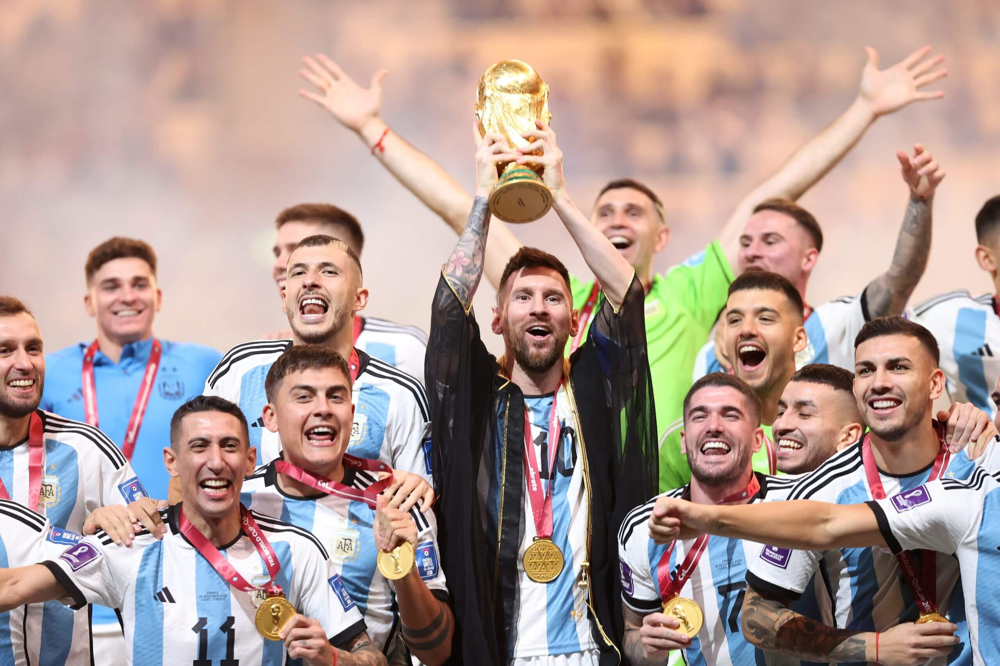

Early Life
Lionel Messi was born on June 24, 1987, in Rosario, Argentina. He showed immense talent in football from a very young age, joining his local club, Newell's Old Boys. At the age of 13, he moved to Spain to join FC Barcelona's youth academy, La Masia.
Club Career
Messi spent over two decades at FC Barcelona, where he became the club's all-time top scorer. In 2021, he moved to Paris Saint-Germain (PSG) and later joined Inter Miami in 2023! Here he continued to showcase his brilliance on the field with both his skill and game IQ.
Best Career Achievements
- FIFA World Cup Champion (2022)
- 8-time Ballon d'Or winner
- All-time top scorer for FC Barcelona
Personal Life
- Married to his wife, Antonela Roccuzzo
- Father of three boys: Mateo, Thiago, and Ciro
- Active in community help through the Leo Messi Foundation
Gallery
